Page 1 / 原始页码 707
第10篇 植物的形态与功能
为什么有些植物积累高浓度的有毒金属
所有植物都从土壤里吸收矿物质。在很多重要的新的陈代谢过程中，这些金属作为辅因子辅助酶执行其催化功能。有些生长在金属含量很高的土壤——所谓的蛇纹石土壤 (serpentine soil) 中的植物极其有趣，因为它们的组织中含有极高浓度的金属离子，甚至超过耐金属植物中的含量。这些罕见的高金属含量植物，称为高累积植物 (hyperaccumulator)，其金属含量超过 1000 μg/g 干重组织。富集最多的是金属是镍 (Ni)，在已有记录的 450 种高累积植物中，有 340 种植物富积镍。
这种情况是怎么形成的呢？为什么这些高累积植物种类进化出这种方式来耐受足以杀死一般植物的高含量的金属呢？我们并不道其中的原因。有些研究人员提出，高累积可能只是植物在高浓度金属环境下生存的一种方式。植物通过将金属离子包在液泡里而将其隔离离开。在液泡里，高浓度的金属离子不会给植物细胞的其他部分造成危害。也有研究人员认为，高累积植物所摄取的矿物质可能只是其生长的特殊嗜好。还有一种看法是，落叶和其凋落物中的金属离子可以阻止其他植物在一株高积累植物附近生长，从而减缓靠得太近的植物带来的竞争压力。
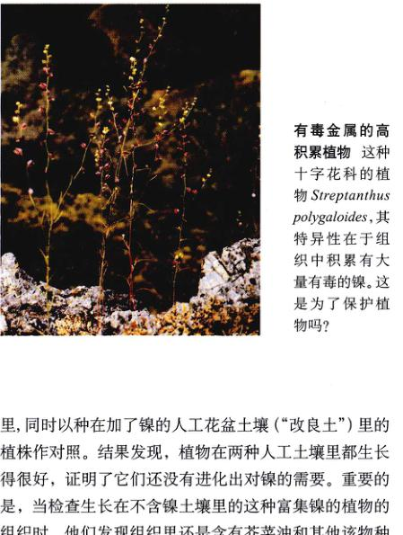
几乎还没有什么实验可以验证这些假说。有一种可能性似乎是说得通的。可能高积累植物中所含有的矿物质对草食动物有毒。如果真是这样，那就很好地解释了为什么自然选择会偏爱生长在高浓度金属土壤中的这些高累积植物（右上图），因为以这种植物为食的生物会死亡。这种保护作用为植物高累积这种进化方式提供了很好的解释。
有关“植物高累积矿物质用以阻止草食性动物食用”的假说，已被奥本大学的 Robert Boyd 和加利福尼亚大学的 Scott Martens 所证实。为了清楚地阐明这一假说，研究人员需要一种方法来比较含高镍的和不含高镍的植物。首先，他们选择了一种富集镍的植物——一种芥菜。在自然状况下，它仅生长在富含镍的蛇纹石土壤里。然后，他们在实验室里将这种植物种在不含镍的人工花盆土壤里，同时以种在加了镍的人工花盆土壤（“改良土”）里的植株作对照。结果发现，植物在两种人工土壤里都生长得很好，证明了它们还没有进化出对镍的需要。重要的的是，当检查生长在不含镍土壤里的这种富集镍的植物的组织时，他们发现组织里还是含有芥菜油和其他该物种的特征化学物质，但只有极少量的镍。现在，他们已经找到了一种能够满足实验成功要求的方法，用这种方法可以控制植物组织中镍的含量而其他条件都保持不变。
让我们设想一下植物利用高浓度镍来防范草食动物的两种办法：
(1) 致死 (mortality)：这一防御可能由昆虫死亡而引起，植食性昆虫摄食含有有毒矿物质的植物组织而死亡。有毒元素硒和氟在累积它们的植物中就是起这样的作用的。硒被结合到昆虫的氨基酸里，使得含有它们的蛋白质功能紊乱。氟在氟乙酸中，破坏三羧酸循环 (Krebs cycle)。与硒和氟不同，镍没有被结合到草食动物的新陈代谢物质中。但是在它被摄取后从植物液泡中释放出来，可能直接危害到草食动物的很多新陈代谢过程。
(2) 味道 (taste)：植食性昆虫对超积累的防御也可能是由于其发现含有毒矿物质的组织味道不好，从而避免了再吃这种高积累的植物。芥菜（十字花科）的特征芥菜油——那种赋予芥菜、萝卜、山葵等刺激性香味和味道的物质——是告知很多种昆虫存在味道不佳的化学物质的信号。
实 验
为了验证某些植物组织中超累积的镍是用于抵御那些以此植物为第一食物来源的草食动物的假设，Boyd 和 Martens 选取了一种十字花科植物——Streptanthus polygaloides 来进行研究。这种小型植物是生长在蛇纹石土壤中的富集镍的一年生植物，分布在加利福尼亚的内华达山脉山脚下。
Page 2 / 原始页码 708
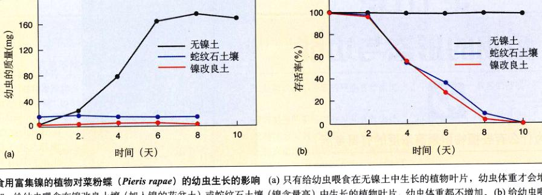
食用富集镍的植物对菜粉蝶 (Pieris rapae) 的幼虫生长的影响 (a) 只有给幼虫喂食在无镍土中生长的植物叶片，幼虫体重才会增加；给幼虫喂食在镍改良土壤（加入镍的花盆土）或蛇纹石土壤（镍含量高）中生长的植物叶片，幼虫体重都不增加。(b) 给幼虫喂食在镍改良土壤或蛇纹石土壤中生长的植物叶片，幼虫存活率显著下降。
有三种实验方案：①将植物种在镍改良土壤（例如，每 kg 土壤中加 1000 mg 镍的花盆土）中；②将植物种在无镍的花盆土中；③从富含镍的天然蛇纹石土壤中采集的植物。在每个方案中，都摘取植物叶片伺喂以这一科植物为食的一种昆虫之一。植食性昆虫对三种方案的反应通过以下三方面进行评估：食物选择、存活率和实验过程中昆虫的质量变化。结果如上图所示。
实验结果
用 3 种叶片喂食菜粉蝶 (Pieris rapae) 和 Euchloe hyantis 的幼虫，以及蝗虫的成虫。通过测量实验过程中昆虫体重变化可知，喂食了叶片的昆虫都表现出生长混乱。上图 a 中显示的菜粉蝶的数据很有代表性。只有喂食了在无镍土壤中生长的植物叶片后，昆虫的幼虫体重才有所增加。以其他两种植物为食的昆虫或者是保持原重或者是体重减少。
证实死亡率假说 用上述 3 种实验方案观察菜粉蝶幼虫和蝗虫的存活率。以①③条件下生长的植物为食的昆虫，其存活率明显低于以②条件下生长的植物为食的昆虫（一种拟寄生物感染影响了 Euchloe hyantis 幼虫的实验结果）。上图 b 中所显示的菜粉蝶的数据还是很有代表性的。
为了检验镍的毒性对上述数据是否有很大影响，用一种含有不同浓度镍的合成食物饲喂菜粉蝶。结果发现，镍浓度在 500 ppm 以下时，幼虫的存活率不受影响。但当镍浓度达到 1000 ppm 时，存活率就显著下降。除了测定镍对昆虫的毒性，Martens 和 Boyd 还研究了镍浓度对植物适应性的影响。将生长在含镍土壤中的植物与不含镍土壤中的植物相比较，21 天以后，前者显示了更高的存活率和更大的增重，而后者的叶子几乎被昆虫幼虫吃光。
排除味道假说 用 3 种实验植物的叶子伺喂昆虫的幼虫和成虫，结果表明，无论镍的浓度如何，这 3 种叶子都会被昆虫摄食。在此基础上，Martens 和 Boyd 得出结论，上述实验结果皆是因为植物中镍的浓度而不是由于饮食抑制的缘故。
研究人员指出，植物富集镍可以明显地作为一种防御机制来增强植物的适应性。由于存在多种防御机制，一些草食动物可能已经获得了相应的适应性，以便能继续以高积累植物为食。为了成为耐镍生物，生物体需要分泌镍或者在自身系统中将镍隔离离开。生物体还可以用混合饮食来稀释镍的浓度。生物体还采取其他的方式来适应含高浓度镍的饮食，这是一个有待进一步研究的领域之一。
Page 3 / 原始页码 709
第37章 植物的进化史
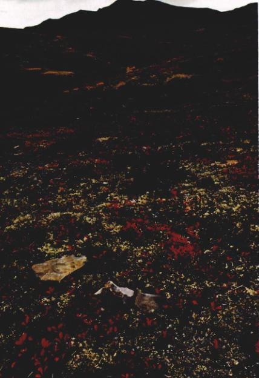
图 37.1 北极苔原 这是地球上最荒凉的环境之一，不过仍然有很多植物以此为家。这些生态系统非常脆弱而且对地球变化尤其敏感。
植物的进化是绿藻征服陆地的过程。大约有 5 亿年，绿藻一直被局限在水中生活，因为水是繁殖必需的，水能提供结构上的支持，可以防止水分散失并可避免太阳的紫外辐射。面对这些挑战，经过无数次的进化改进，产生了今天占据了所有陆地群落的 30 多万种植物，从森林到阿尔卑斯苔原，从农田到沙漠（图 37.1）。大多数植物利用光合作用，将光能转化为化学键能，并且为所有有氧生物提供氧气。我们从植物中获得食物、衣服、用来建房子和作为燃料的木材、化学物质以及很多药品。这一章将揭示植物的进化史和千万年来使得植物能在大多陆地环境中得以生存的进化策略。
Page 4 / 原始页码 710
37.1 植物的生活史中有多细胞的单倍体和二倍体阶段
37.1.1 植物的进化起源
什么是植物？植物是一群以淡水绿藻为共同祖先，并且进化了 4.7 亿年的生物体。植物的显著特征是胚 (embryo) 被保护，这是在陆地生存的必要条件。令人惊奇的是，仅一种绿藻就可以进化出所有的陆生植物，从藓类植物到显花植物（被子植物）。实际上，这种藻类真正是什么样子还是一个谜。但是，今天在淡水湖里一定还存在它的近亲。DNA 的序列数据证明了一脉进化出所有植物的观点。在每一步进化过程中，都有证据显示只有一科植物发生了转变。与绿藻共有的演化历史使得生物学家将植物分成三界：绿色植物界（绿藻和植物）、红（红藻）和褐色植物界（褐藻）。真菌不属于这一体系。它们比植物晚出现并且与后生动物关系更密切（见第 44 章）。
现存植物有 12 个门，每一对胚都有一定程度的保护。所有植物都有多细胞的单倍体和二倍体阶段。随着时间的推移，进化的趋势是增强对胚的保护和缩短生活史中的单倍体阶段。根据维管组织的有无可以将植物分成两类，维管组织可以帮助输运水分和营养物质。三个门（藓类、苔类、角苔类）没有维管组织，被称为非维管植物 (nonvascular plants)。12 个植物门中的其他 9 个门被统称为维管植物 (vascular plants)，其中包括蕨类、松类和显花植物等。维管植物的根、茎、叶中有输运水分的木质部组织和运输营养的韧皮部组织。根据胚被保护程度的多少，维管植物可以进一步分类。无种子维管植物 (seedless vascular plants)（蕨类）比裸子植物（包括松类和苏铁类）和被子植物（显花植物）的种子对胚的保护少（图 37.2）。虽然所有的有无种子的维管植物通常被视为一个类群，但是，最新的证据表明无种子的维管植物具有两个不同的单系谱系：①石松；②蕨类和木贼。蕨类和木贼与种子植物亲缘关系最近。大约 1.5 亿年前，产生了进一步改良的被子植物——出现了吸引传粉者的花朵和帮助种子传播的果实，果实包裹着被保护的种子。这些谱系中的许多种类依然存在。如果你可以回到 5 000 万年前的恐龙时代，你会看到橡树、胡桃和小无花果树！
适应陆地
植物和真菌是仅有的最初在陆地生存的主要生物类群。所有的植物都通过分泌蜡质的角质层 (cuticle) 到其外表面以防止脱水 (desiccation)，即生物体中水分散失到空气中的趋势。角质层相对不透水，有效地阻止了水分的散失。
但角质层又带来了另一个问题，即阻碍了呼吸和光合作用所必需的气体交换。水分和气体进出植物体是通过过很小的开口——气孔 (stomata) 的。
叶子的进化使得光合作用的表面积增加。二倍体世代占据优势这一转变，加之维管组织提供了结构上的支持，使植物有可能利用陆地环境垂直方向的优势进化发展为树木。
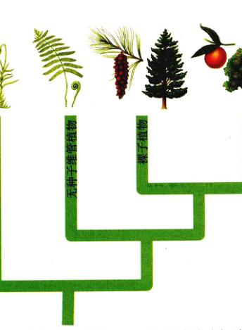
图 37.2 4 个主要植物类群 在这一章里我们将讨论 4 个主要植物类群。实际上有 5 个不同的类群，无种子维管植物有两个不同的起源，但是为了简单起见这里将它们合并。始祖绿藻已在第 35 章中讨论。
37.1.2 植物的生活史
所有的植物在进行减数分裂和配子融合后都会经历单倍体和二倍体的世代交替。植物不像我们人类在减数分裂后紧接着配子融合。人类有一个二倍体的 (diplontic) 生活史（只有二倍体阶段是多细胞），但是植物生活史是单双倍体的 (haplodiplontic)（具有多细胞的单倍体和二倍体阶段）。基本的单双倍体生活史见图 37.3。褐藻、红藻、绿藻都是单双倍体的（见第 35 章）。我们通过减数分裂生成配子，而植物通过一个多细胞的单倍体个体的有丝分裂产生配子。二倍体世代或孢子体 (sporophyte) 世代，与单倍体又名配子体 (gametophyte) 世代交替进行。孢子体意思是“孢子植物”，配子体意思是“配子植物”。这些术语表明了各个世代产生的生殖细胞种类。
Page 5 / 原始页码 711
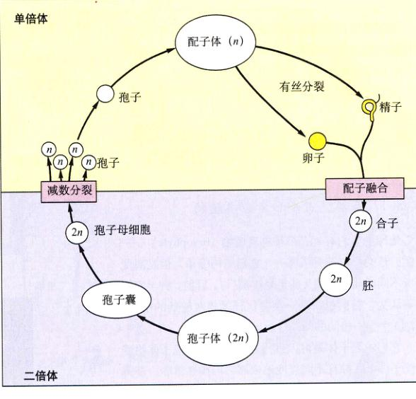
图 37.3 植物的生活史 注意单倍体个体和二倍体个体都是多细胞的。而且，孢子通过减数分裂产生，而配子通过有丝分裂产生。
二倍体的孢子体通过减数分裂产生单倍体孢子（不是配子）。减数分裂发生在孢子囊 (sporangium) 中，二倍体的孢子母细胞 (spore mother cell) 在孢子囊中进行减数分裂，一个孢子母细胞生成 4 个单倍体的孢子 (spore)。孢子通过有丝分裂生成一个多细胞的单倍体的配子体。孢子是配子体世代最先出现的细胞。
相反，单倍体的配子体是通过有丝分裂生成的，并产生配子。当配子融合时，所形成的合子 (zygote) 是二倍体的，并且是孢子体世代首先出现的细胞。合子发育成一个二倍体的孢子体，孢子体产生孢子囊，减数分裂便发生在孢子囊中。
虽然所有植物都是单双倍体交替的，但是与裸子植物和被子植物相比，藓类、苔类和蕨类植物中，配子体可以进行光合作用，自由生活；而在其他植物中，配子体通常依靠孢子体提供营养。你看藓类植物时，你看到的大部分都是配子体组织，它们的孢子体通常较小，呈褐色或黄色，附着在配子体组织上。在所有的维管植物中，配子体比孢子体小得多。在种子植物中，配子体依靠孢子体提供营养并且被包被在孢子体组织中。你看棵子植物或被子植物时，除了个别例外，所看到的都是孢子体。
了解了配子体优势与孢子体优势的区别，就不难理解为什么没有藓类树木。我们所说定义的藓类是一个配子体，并且它能在其顶端产生配子。卵子是固定不动的，精子在少量水中游到卵附近。如果藓类植物有美洲杉那么高，那么它不但需要维管组织来运输和支持，而且精子还必须游到树上去！与此相反，蕨类的配子体在森林的地上发育，雌雄配子可在此相遇。蕨类树木在澳大利亚很丰富，单倍体的孢子落在地上发育成配子体。
整体考察了植物的生活史，我们将研究主要的植物类群。我们将看到，从一个类群到另一个类群，配子体世代的缩短，多细胞配子囊 (gametangium)（产生配子的结构）的退化，对陆地生活特化程度的增加，包括表现出的优势植物——显花植物的结构适应性的显著增强。从淡水绿藻登陆以来，千万年来种子植物的进化特征表现了相似的趋势。
Page 6 / 原始页码 712

37.2 非维管植物特化程度相对较低，但是可以成功地在很多陆地环境下生存
37.2.1 藓类、苔类和角苔类植物
地球上大约有 24 700 种苔藓植物 (bryophyte)——藓类、苔类和角苔类植物——它们结构简单，但是高度适应不同的陆地环境（甚至是沙漠！）。目前，科学家们普遍认为，苔藓植物是一类特化程度相对较低的植物，包括 3 个很不相同的门。
它们的配子体是可以进行光合作用的。孢子体附着在配子体上，并且不同程度地依赖它们提供营养。苔藓植物像蕨类和某些其他的维管植物一样，需要水（例如雨水）进行有性生殖。在热带和温带潮湿的环境中，这类植物极其常见，不足为奇。
大多数苔藓植物是小型的，很少超过 7 cm 高，配子体比孢子体发达。有些种类的孢子体被完全包被在配子体组织当，另外一些种类则不然。孢子体成熟时通常呈褐色或淡黄色。
1) 藓门 (Bryophyta)，藓类
藓 (moss) 的配子体通常是小型的叶状结构（不是含有维管组织的真叶），呈螺旋状排列或交替绕茎状轴排列（图 37.4）；该茎状轴可以通过假根 (rhizoids) 固定在基质上。假根由一些吸收水分的细胞组成，但是吸收作用不像维管植物的根那么明显。除了绿色的表面、扁平的叶片和稍微变厚的纵向中脉之外，藓的“叶子”与真叶几乎没有相似之处。它只由一层细胞组成（中脉部分除外），没有维管束和气孔，并且所有的细胞都是单倍体。
水分可以通过藓的配子体轴中央的一束特化细胞上升，但是植物所需的大多数水分是沿植物外部向上传输的。有些藓还有特化的运输营养物质的细胞，它们环绕着运输水分的细胞排列。
多细胞的配子囊 (gametangia) 在叶状的配子体的顶端形成（图 37.5）。雌配子囊，也称颈卵器 (archegonia) 可以与雄配子囊，也称精子器 (antheridia) 在同一个配子体上发育，也可以在不同的配子体上发育。在一个雌配子囊膨大的基部生成一个卵细胞，而在一个雄配子囊中可以生成很多精子。当精子从雄配子囊中释放出来，它们通过鞭毛 (flagella) 的帮助在露水或雨水中游到雌配子囊处。一个精子（单倍体）与一个卵子（单倍体）结合生成一个二倍体的合子。合子通过有丝分裂发育成孢子体，孢子体由细长的基柄和顶端膨大的孢蒴 (capsule)——孢子囊组成。随着孢子体的发育，孢子囊的基部被包埋在它的营养来源——配子体组织中。孢子囊通常是圆柱形或棒状的。孢子囊中的孢子母细胞经过减数分裂，每一个生成 4 个单倍体的孢子。在很多成熟的藓中，孢子囊的顶端裂开，然后孢子被释放。落在合适的潮湿地点的孢子会萌发，并长成线状的结构，由此结构分支生成假根和向上生长的“芽”。每个芽发育成一个含有叶状结构的新配子体。
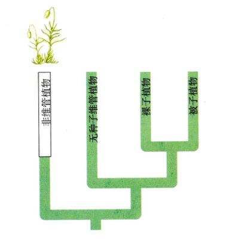
图 37.4 藓 (Polytrichum) 的“叶”片 是配子体，孢子体由黄绿色的柄及其顶部的孢蒴或孢子囊组成。
Page 7 / 原始页码 713
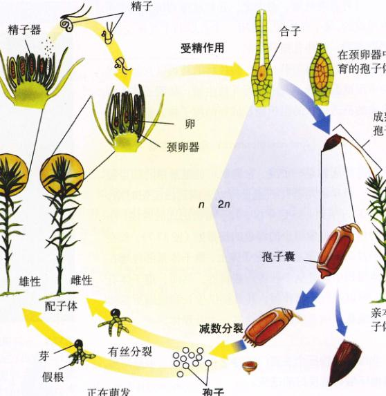
图 37.5 藓类的生活史 藓类生活史的多数时期是单倍体。叶状的配子体可以进行光合作用，而较小的孢子体则不能，其营养依赖配子体。需要水运送精子到卵子处。
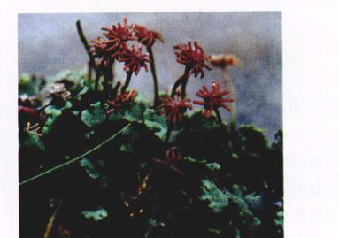
图 37.6 一种常见的苔——地钱 (Marchantia) 苔的孢子体在伞状结构的组织中发育形成，伞状结构产生于扁平、绿色的匍匐状的配子体表面。
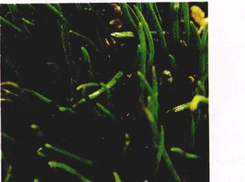
图 37.7 角苔 (角苔门) 在这张图片上可以看到角苔的孢子体。不像其他苔藓植物的孢子体，大多数角苔的孢子体是可以进行光合作用的。
在北极和南极这样恶劣的环境中，藓是其中最丰富的植物类群，它们不仅拥有最多的个体数量，还拥有最多的种类。很多藓可以耐受长时间的干旱，虽然它们在沙漠中并不常见。大多数藓对空气污染很敏感，因此在城市里、城市附近或其他空气污染程度高的地方极少存在。有些藓，例如泥煤藓 (Sphagnum)，可以吸收 25 倍于自身质量的水分，将其作为土壤调节者或者将其干燥后作为燃料都具有经济价值。
2) 苔门 (Hepaticophyta)：苔类植物
“wyrt”这一古老的英语词汇意思是“植物”或“草本植物”。一些常见的苔具有扁平的像肝脏的裂片一样的配子体——所以连起来就是“苔” (liverwort)。大多数种类的苔是这一门最著名的代表，但它们只占所有苔类的 20%（图 37.6）。其他 80% 是叶状的，并且外表上像藓。配子体是平伏的而非直立的，并且假根是单细胞的。
Page 8 / 原始页码 714
一些苔具有气室，由向上的、分枝状排列的光合作用细胞组成的，每个气室的上部有一个小孔以利于气体交换。与气孔不同，这些孔是开着的，不能关闭。
苔的有性生殖与藓相似。叶状的苔可以在其伞状结构中形成配子囊。苔还能行无性生殖，从配子体上释放出来的凸透镜状的组织能长成新的配子体。
3) 角苔门 (Anthocerotophyta)：角苔类植物
角苔的起源是一个谜。它们很可能是最早的陆生植物之一，最早的角苔化石孢子可以追溯到白垩纪时期，距今 6500 万年到 1.45 亿年前，被子植物出现的时候。小角苔的孢子体像细小的绿色的扫帚柄（图 37.7），长在直径不及 2 cm 的薄膜状的配子体上。孢子体基部埋在配子体组织中，并从中获得一些营养。然而，孢子体有气孔，可以进行光合作用，并提供生长和繁殖所需的大量能量。角苔细胞通常含有一个叶绿体。
37.3 无种子的维管植物的孢子体具有完善的输导组织
37.3.1 维管植物的特征
已有完整记录的最早的维管植物属于莱尼蕨门 (Rhyniophyta)，它们繁盛于大约 4.1 亿年前，但是现在已经灭绝。我们并不能确定这些最早的维管植物是什么样子的，但是从一种裸蕨类 Cooksonia 的化石，我们可以看到它们的一些特征（图 37.8）。Cooksonia 是已知最早的陆生维管植物，出现在大约 4.2 亿年前的志留纪晚期。它之所以能够繁盛，部分原因是它在陆地上扩展时遇到的竞争很少。这种植物只有几厘米高，没有根和叶。它们几乎只由一个分支的轴组成，二叉分支很均匀，向顶端延伸。它们具有同形孢子（只产生一种孢子）。孢子囊生在分支的顶端。随后产生的其他古老的维管植物进化出了更复杂排列的孢子囊，茎隆起生成叶。
Cooksonia 和其他随后产生的早期维管植物由于有了有效输导水和营养物质的维管组织 (vascular tissue)，因而成了陆地上的繁盛类群。维管一词来自于拉丁词 vasculum，意思是导管或管道。这些组织由串珠状的圆柱状的或者长条形的细胞构成的网状结构组成，从根的末梢，穿过茎，一直延伸到真叶。一种维管组织是木质部 (xylem)，从根部向上运输水分和溶解的矿物质。另一种韧皮部 (phloem) 组织则在植物体内输送糖和激素类信号。值得注意的是，维管组织只产生在孢子体，而不是配子体（除少数例外）（见第 38 章有关维管组织结构的讨论）。出现了角质层和气孔也是维管植物的特征。
除了一些高山和苔原外，现存的 9 门维管植物在所有的陆生环境中皆占主导地位（表 37.1）。单双倍体的生活史仍然存在，但是一些门的配子体世代已经在进化中退化。相应的多细胞的配子囊也退化了。
随着配子体在大小和复杂程度上的退化，出现了种子。种子是具有高度抵抗力的结构，适合于保护植物的胚免于干旱，还一定程度上免于被动物捕食。
另外，几乎所有种子都含有供幼小植物发育的营养。种子只在具有异形孢子 (heterosporous) 的植物中出现（产生两种类型孢子的植物）。异形孢子在植物中出现过多次。显花植物的果实保护种子，并且吸引动物帮助散布种子，扩大种群的生存范围。从蕨子植物中进化出来的花，吸引传粉者。花的出现因其遗传性具有广泛进行杂交的优势，提高了植物的遗传多样性。
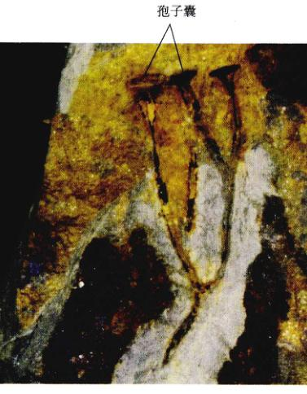
图 37.8 一种裸蕨 Cooksonia ——已知最早出现的维管植物 这里可以看出它的直立的分支的茎，不过几厘米高，顶端是孢子囊。它通常在阴湿的环境（如泥滩中）生存，有表皮，并产生典型的维管植物的孢子。这块化石是一种大约生活在 4.1 亿年前的植物。Cooksonia 属于莱尼蕨门 (Rhyniophyta)，这一门都是已灭绝的植物。
Page 9 / 原始页码 715
表 37.1 现存的维管植物
| 门 |
实 例 |
主 要 特 征 |
近似物种数 |
| 显花植物门 (Anthophyta) |
显花植物 (被子植物)
Icon |
具异形孢子的被子植物。精子不能动，通过花粉管到卵子处。种子有果实包被。叶子的种类和形态有很大差异。草本、藤本、灌木或木本，大约有 14000 属。 |
250 000 |
| 羽叶植物门 (Pterophyta) |
蕨类
Icon |
最早的具同型孢子的 (少数具异形孢子) 维管植物。精子可动。必须有水才可受精。叶子在成熟的时候展开的大型叶。孢子体和所有的配子体可以进行光合作用。大约有 365 属。 |
11 000 |
| 石松门 (Lycophyta) |
石松
Icon |
具同形或异形孢子的维管植物。精子可动。必须有水才可受精。叶子是小型叶。大约有 12~13 个属。 |
1 150 |
| 松柏门 (Coniferophyta) |
针叶树 (包括松树、云杉、冷杉、紫杉、红杉和其他)
Icon |
具异形孢子的种子植物。精子不能动，通过花粉管到卵子处。叶子大呈针状或鳞状。乔木、灌木。大约有 50 属。 |
601 |
| 苏铁门 (Cycadophyta) |
苏铁
Icon |
具异形孢子的维管种子植物。精子生有鞭毛且可动，但是只局限于向卵子附近生长的花粉管中。有羽状叶的棕榈状植物。与针叶树相比，苏铁的次生生长缓慢。有 10 属。 |
206 |
| 买麻藤门 (Gnetophyta) |
买麻藤
Icon |
具异形孢子的维管种子植物。精子不可动，通过花粉管到达卵子处。仅有的具导管的裸子植物。木本、灌木或藤本。具有 3 个差异很大的属 (麻黄属、买麻藤属和百岁兰属)。 |
65 |
| 楔叶门 (Arthrophyta) |
木贼
Icon |
具同形孢子的维管植物。精子可动。受精需要外界水分。茎有棱，具节，可以进行光合作用或不可以。叶鳞片状，轮生，成熟时不能进行光合作用。仅有 1 属。 |
15 |
| 松叶蕨门 (Psilophyta) |
扫帚蕨 (裸蕨)
Icon |
具同形孢子的维管植物。精子可动。受精需要外界水分。根与茎之间没有分化。没有叶子，两属中一个属有鳞片状突出体，另外一个属有叶状附着物。 |
6 |
| 银杏门 (Ginkgophyta) |
银杏
Icon |
具异形孢子的种子植物。精子生有鞭毛且可动，通过花粉管到达卵子附近。落叶树，叶扇形，叉状脉。种子像一个肉质的小李子，外壳气味不佳。 |
1 |
Page 10 / 原始页码 716
37.3.2 无种子的维管植物
最早的维管植物是没有种子的。现存维管植物中有 4 门植物没有种子，至少还有另外 3 门由化石可知没有种子。在研究维管植物的适应性时，我们将着重分析生殖策略和日益复杂的输导系统的优势。我们将从最熟悉的无种子的维管植物——蕨类植物开始。
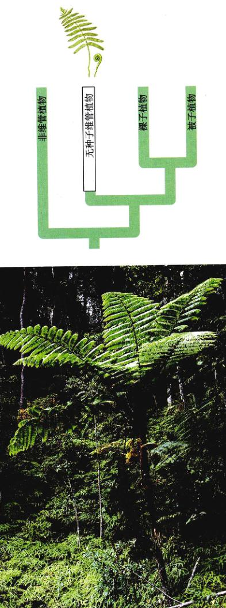
1) 羽叶植物门：蕨类植物
羽叶植物门 (Pterophyta) 的蕨类植物是无种子的维管植物中最丰富的门类，现存大约有 12 000 种。最近的研究显示，蕨类植物可能与种子植物的亲源关系最近。化石记录显示，蕨类植物起源于约 3.5 亿年前的泥盆纪，并且在随后的 5000 万年中变得丰富，而且形态趋于多样化。它们的祖先没有宽阔的叶子，而且早在 3.75 亿年前就在陆地上生存。
现在，蕨类植物在全世界的各种环境中都很繁盛，但是大约 75% 的种类出现在热带。蕨类植物个体差异很大，其直径可能小到不及 1 cm，如水生的小型蕨——满江红 (Azolla)，也可能高达 24 m，有 5 m 或更长的叶子，如树蕨 (图 37.9)。孢子体和很小的配子体（直径不及 6 mm）都可以进行光合作用。蕨类的生活史与藓类的区别在于，蕨类的孢子体有了进一步的发展，更加独立，更占优势。蕨类孢子体的结构比藓类复杂，有维管组织并有完全分化的根、茎、叶器官；但是配子体缺少维管组织。
蕨类的孢子体通常有水平生长的地下茎，称为根状茎 (rhizome)，其侧面生出根。蕨叶通常在根状茎顶端生出，幼叶呈螺旋状卷曲（“提琴头”），长大后展开。很多蕨叶的叶片高度分裂并呈羽状，使得这类蕨成为观赏植物。有些蕨，如四叶草 (Marsilea) 的叶片很像 4 叶的三叶草，但是四叶的蕨叶还是从卷曲的提琴头开始。其他蕨既能生成进行光合作用的蕨叶，也能生成不能进行光合作用的多为褐色的蕨叶。
大多数蕨具同形孢子 (homosporous)，产生不同的孢子囊 (sporangia)，常丛生在一起，称为囊群 (sori)，常见于蕨叶下表面。在发育过程中，囊群被一个透明的伞状的盖子所保护。乍一看，人们可能会会把囊群误认为植物上的昆虫。孢子囊中二倍体孢子母细胞经过减数分裂，生成单倍体的孢子。成熟时，孢子从孢子囊中突然弹出，那些落在适宜的潮湿地方的孢子就可能萌发，形成配子体。配子体通常是心形，只有一层细胞厚（中央部位除外），通过假根 (rhizoid) 固着在基质上。这些假根不是真的根，因为它们缺少维管组织，但是就像在非维管植物一样，它们能协助从土壤里输导水分和养分。蕨状的颈卵器 (archegonia) 和球状的精子器 (antheridia) 可能由同一个配子体产生，也可能由不同的配子体产生。
在精子器中形成的精子有鞭毛，当有水存在时，它们通过鞭毛游向颈卵器；这通常是因为受到了颈卵器分泌的化学信号的刺激。一个精子与一个卵子在颈卵器的基部融合形成合子 (zygote)。合子然后发育成一个新的孢子体，完成整个生活史（图 37.10）。多细胞的配子囊仍然存在。前面已经提到过，向孢子体世代占优势的转变使蕨类可以长到很高而不影响精子顺利游向卵子。多细胞的颈卵器为发育的胚提供了一定的保护。

图 37.9 一种生长在马来群岛森林中的树蕨 (羽叶植物门) 蕨类植物是目前无种子的维管植物中最大的类群。
Page 11 / 原始页码 717
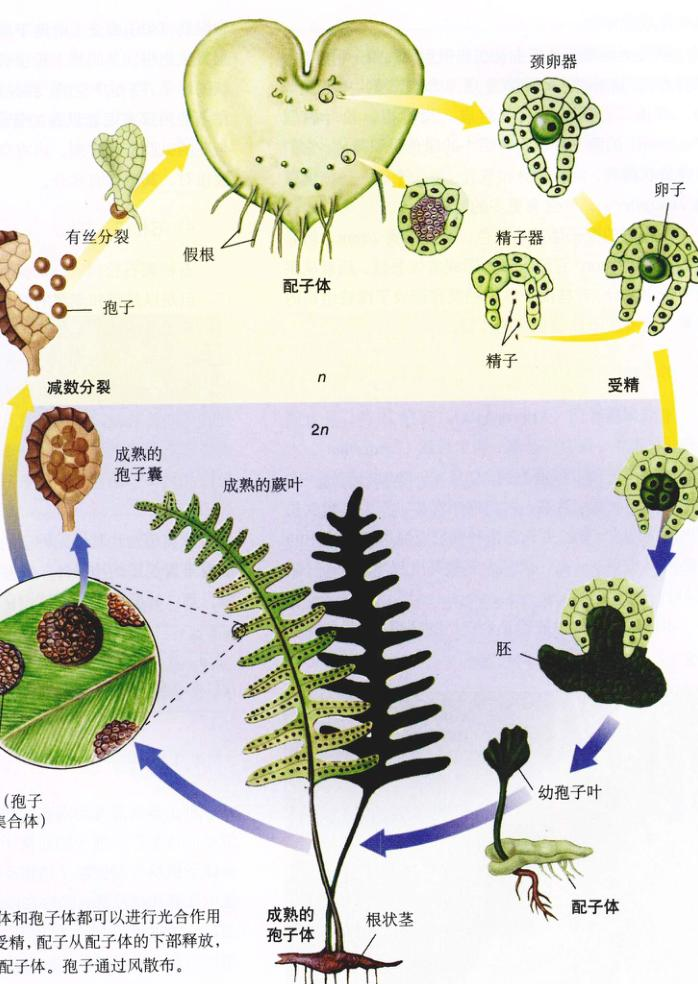
图 37.10 蕨的生活史 配子体和孢子体都可以进行光合作用并且独立存活。需要水进行受精，配子从配子体的下部释放，在潮湿的土壤中游向附近的配子体。孢子通过风散布。
2) 松叶蕨门 (Psilophyta)：扫帚蕨
无种子的维管植物中的另外两个门，松叶蕨门（扫帚蕨）和楔叶门（木贼）与蕨类有极其相似点。例如，它们都形成精子器和颈卵器。受精过程需要水，带鞭毛的精子在水中游向卵子，并与之融合。大多数种类子植物没有带鞭毛的精子，不形成精子器，虽然有一些植物形成颈卵器。
Page 12 / 原始页码 718
蕨类植物和扫帚蕨生长在热带和亚热带，可能与木贼具有共同的起源。扫帚蕨是现存的维管植物中最简单的，仅由二分叉的绿色茎组成，没有根。松叶蕨属 (Psilotum) 的两三种植物有细小的绿色组织薄片，它们呈螺旋状排列，没有叶脉和气孔。另一个属——梅溪蕨属 (Tmesipteris)，含有更多的叶状附属物。
扫帚蕨的配子体基本无色，直径不到 2 mm，但是可长达 18 mm。它们与真菌形成寄生关系，后者从蕨类中获得养分。有些配子体已经发育形成了维管组织的要素，具有配子体所独有的特征。
3) 楔叶门：木贼
木贼属楔叶门 (Arthrophyta)，现存 15 种，具有同形孢子，草本。仅有一个属，即木贼属 (Equisetum)。木贼属的化石记录可以追溯到 3 亿年前，那时它们的一些亲缘种是树状的。现在，它们遍布世界，但大多数生长在潮湿的地方。有些生长在加利福尼亚海边红树林中的种类可以长到 3 m 高，但是大多数高度都不及 1 m (图 37.11)。
木贼的孢子体由能行光合作用的茎组成，并具有节和纵肋 (rib)，由分节的地下根状茎长出。从根状茎的节上又生出根。茎的节轮生着不能进行光合作用的鳞片状的叶子。茎是中空的，在纵肋的表皮细胞沉积有硅，在茎的内部有两套纵向的管状导管。外面的导管较小，与茎的纵肋交替排列，内有空气，里面的导管较大，与棱相对，其内含有水分。
4) 石松门：石松
石松属石松门 (Lycophyta)，在世界范围内分布很广，但是以热带和潮湿的温带地区最为丰富。有些石松种类呈树状，早在 2.7 亿年前就已出现。在石松 4 个属的成员中，近 1000 种现存物种的形态与藓类植物相似，但是一旦清楚了它们的内部结构和繁殖过程，就会知晓这些维管植物与藓没有什幺关系。现代石松具同形或异形孢子。孢子体有叶状茎，很少超过 30 cm 长。石松门从另一个单系的无种子的植物类群独立演化而来。
37.4 种子保护并且帮助植物胚的传播
37.4.1 种子植物
种子植物最先出现在大约 4.25 亿年前。它们的祖先似乎应该是产生孢子的原裸子植物 (progymnosperm)。原裸子植物与现代裸子植物有一些相同的特征，包括次生木质部和韧皮部（允许在以后的发育中树木周长的增加）。一些原裸子植物有叶子。它们的繁殖很简单，种子植物由哪一种原裸子植物进化而来还不能确定。
从进化和生态角度看，种子的出现代表了一个很重要的进步。胚受到额外一层形成胚珠的孢子体组织的保护。在发育过程中，这层组织变硬形成种皮 (seed coat)。其作用除了抵抗干旱，传播能力也增强了。可能更重要的是，它在植物的生活史中引入了一个休眠阶段，可以使胚保持存活，直至环境条件适宜时再进一步生长。
种子植物生成两种配子体——雌配子体和雄配子体，每一种都只有几个细胞。花粉粒 (pollen grains) 是多细胞的雄配子体，通过风或传粉者 (pollinator) 运输到雌配子体的卵中。在一些种子植物中，精子沿着一个生长的花粉管向卵移动。这就不再需要额外的水份。与无种子的植物不同，是整个雄配子体而不只是精子移向雌配子体。雌配子体在胚珠里发育。在显花植物（被子植物）中，胚珠被二倍体的孢子体组织（即将来发育成过实的子房）完全包被。在裸子植物（大多数是产生球果的种子植物）的传粉过程中，胚珠并没有被孢子体组织完全包被。
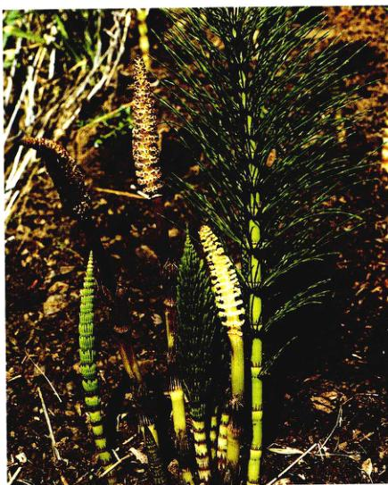
图 37.11 木贼 (Equisetum telmateia) 是楔叶门惟一现存属的代表 这种木贼有两种类型的直立茎：一种是绿色的，可以进行光合作用（称为营养茎，译者注）；另一种多呈浅褐色，茎的顶端有产生孢子的“球果”（称为生殖茎，译者注）。
Page 14 / 原始页码 720
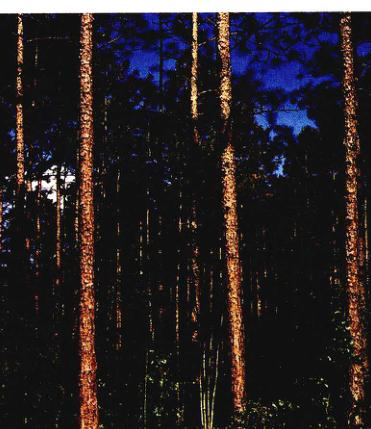
37.4.2 裸子植物
现存的裸子植物 (Gymnosperm) 有四个门（松柏门、苏铁门、买麻藤门、银杏门），它们彼此之间没有直接的联系，但是都没有被子植物的花和果实。在所有的裸子植物中，胚珠最终变成种子，暴露在鳞片（变形叶）之上，在传粉的时候也没有被孢子体组织完全包被。裸子植物这一名字是将希腊文的词根 gymnos（意为“裸露的”）与 sperma（意为“种子”）组合而成的。换句话说，裸子植物就是种子裸露的植物。然而，虽然在传粉的时候胚珠是裸露的，但是裸子植物的种子有时候在成熟时会被其他孢子体组织包围。
不同种类裸子植物的生殖过程和生殖形式有很大不同。例如，苏铁和银杏含有可移动的精子，即便精子包含在花粉管里，而很多其他裸子植物没有鞭毛。雌球果最小的不足 25 g，直径只有几毫米，最大的重量超过 45 kg，长度超过 1 m。
1) 松柏门：针叶树
我们最熟悉的裸子植物是松柏门 (Coniferophyta) 的针叶树，包括松树、云杉、冷杉、雪松、铁杉、紫杉、落叶松、柏树等 (图 37.12)。海边的红木，Sequoia sempervirens，一种原产自加利福尼亚西北部和俄勒冈州西南部的针叶树，是现存最高的维管植物。它可以长到 100 m 高（300 英尺）。另外一种针叶树，生长在加利福尼亚白山山脉 (White Mountains of California) 的长寿松 (Pinus longaeva) 是现存最老的树木，有一株已活了 4900 年。针叶树分布在地球的寒冷地区，有时候分布于干旱地区。它们是木材、纸张、树脂、紫杉醇（用于治疗癌症）和其他一些有重要经济意义的产品的来源。
松树：现存的松树 (Pines) 有 100 多种，皆原产于北半球，虽然有一种可能覆盖到了赤道以南。松树和云杉是针叶林的构成要素，主要位于北极原和温带落叶林之间，以及北美大草原以南的地区。在 20 世纪，松树已被广泛种植到南半球。
松树叶为针形，粗糙，通常 2~5 个针叶簇生成束。叶子具有厚厚的表皮和深陷的气孔，代表了止水分散失的进化适应。这些特性很重要，因为很多生长在北极地区的，一年中有一段时间其土层会结冻，这使得根吸水困难。叶子和孢子体的其他部分有导管，周围细胞中分泌松脂。松脂阻止昆虫和真菌的侵扰。某些松树的树脂被采集后可开发为商品。如其挥发性液体成分——松节油 (Curpentine) 和用于弦乐器上的固体松香 (rosin)。松树的木材主要由木质部组织组成，这些组织缺少其他树木中所具有的更坚硬的细胞类型。所以松树是“软”木而不是“硬”木。松树的厚树皮体现了在高温和低温条件下生存的另一种适应。事实上有一些球果是靠火裂开的，然后将种子释放到火烧过的再生林地区。
如前所述，所有的种子植物都具有异形孢子，所以孢子产生两种配子体（图 37.13）。松树的雄配子体（花粉粒）由小孢子发育而来，在较低树枝的顶端，一棵树上可能有上百个这样的球果群。雄球果的长度一般为 1~4 cm，由小的呈螺旋状或轮状排列的纸质鳞片构成。每片鳞片内有 1 对小孢子囊。在小孢子囊中无数的小孢子母细胞经过减数分裂，每一个小孢子母细胞生成 4 个小孢子。1 个小孢子发育成 4 细胞的花粉粒，花粉粒上有一对气囊 (air sac)，增加了花粉粒在空中的飘浮能力。松树的一束雄球果能生成 100 多万颗花粉粒。
雌球果 (female cone) 通常在与雄球果同一株树的靠上的树枝上发育。雌球果比雄球果大，并且它们的鳞片是木质的。每个鳞片的基部生有 2 个胚珠。每个胚珠含有一个大孢子囊，叫做珠心 (nucellus)。珠心本身被一层厚厚的珠被 (integument) 细胞包围，珠被上端有一个小的开口，即珠孔 (micropyle)。其中的一层珠被后来发育成了种皮。大孢子囊中的 1 个大孢子母细胞经过减数分裂生成 4 个大孢子。其中 3 个大孢子退化，留下来的那个大孢子经过一年中适宜的季节后，缓慢地发育成为一个雌配子体。雌配子体成熟的时候含有上千个细胞，珠孔这端生成 2~6 个颈卵器。每个颈卵器含有一个卵，卵子很大，不需要显微镜都可看到。
雌球果通常要两个或更多的季度才能成熟。开始的时候它们略带红色或紫色，但是很快变成绿色，在第一个春天来临的时候，鳞片伸展。鳞片伸展时，花粉粒被风吹到上面，其中的一些被黏在珠孔渗出的黏液上。黏液里的花粉粒缓慢地穿过珠孔到达珠心的顶端，在这之后鳞片很快闭合。大约一年后，颈卵器和雌配子体的其他部分才发育成熟。雌配子体发育的时候，花粉粒在珠心底部伸出 1 个花粉管并且逐渐穿过珠心到达颈卵器。花粉管生长时，4 细胞花粉粒之一的生殖细胞，进行有丝分裂，生成的两个精子细胞再分裂 1 次，最后生成的 2 个细胞行使精子的功能。具有 2 个精子的已萌发的花粉粒就是成熟的雄配子体。
传粉后大约 15 个月，花粉管到达颈卵器，将其中的内含物注入颈卵器。一个精子与卵子融合，生成受精卵。另一个精子和花粉粒中的其他细胞则解体。受精卵发育成种子中的胚。胚子经散落和萌发后，下一代的幼孢子体生长成一棵树。

图 37.12 针叶树 长叶松 (Pinus palustris) 是裸子植物中最大的门——松柏门的代表。
Page 15 / 原始页码 721
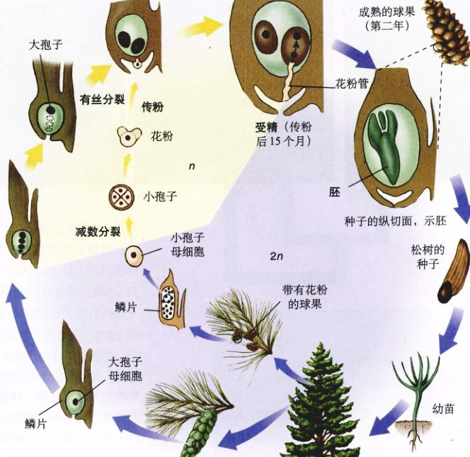
图 37.13 松的生活史 松的雌雄配子体都很小。精子靠风传播雌配子体（花粉）得到散布。花粉管的生长使得精子能到达雌球果中的卵子。发育成种皮的子房对胚提供了额外的保护。
Page 16 / 原始页码 722
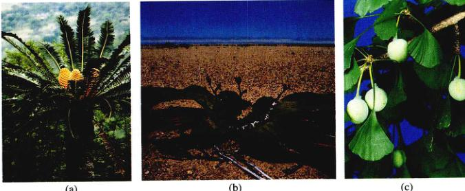
图 37.14 裸子植物的 3 个门 (a) 一种非洲苏铁，Encephalartos transvenosus。(b) 百岁兰 Welwitschia mirabilis，是买麻藤门 3 个属中的一种。(c) 银杏 (Ginkgo biloba) 是银杏门现存的惟一代表。
2) 苏铁门：苏铁
苏铁 (cycad) 是生长缓慢的热带和亚热带裸子植物。在已知的 100 种苏铁中，多数种类的孢子体与棕榈相似（图 37.14a），树干可以长到 15 m 或更高。与显花植物棕榈不同的是，苏铁产生球果，生活史与松树相似。雌球果在叶子基部直立生长，在有些种中很大，可以重达 45 kg。苏铁的精子虽然是在花粉管中形成，却被释放到胚珠中再游向颈卵器。这些精子是所有现存生物中最大的精子细胞。有些野生种类的苏铁正面临绝迹，不久它们可能将只在植物园里生存。
3) 买麻藤门：买麻藤
买麻藤门 (Gnetophyta) 有 3 个属，现存大约 70 种。它们是惟一的木质部中有导管（一种特别有效的输导细胞）的裸子植物，而这是被子植物的普遍特征。3 个属在形态上差异极大，其中最奇特的植物之一是百岁兰 (Welwitschia)，它生长在非洲西南部的纳米布 (Namib) 沙漠和 Mossamede 沙漠 (图 37.14b)。它的茎像一个大而浅的杯子，在地面以下变细成为主根。它有两片从基部一直向上生长的带状的革质叶片，生在茎边缘的叶子基部，并且是雌雄异株的。
半数以上的买麻藤植物属于麻黄属 (Ephedra)，它们在美国西部和墨西哥的干旱地区很常见。除了澳洲之外，各洲都有分布。植物呈灌木状的，茎分节，似木贼的茎，在茎的每个节上有纤细的鳞片状叶子。雌雄生殖结构可以在同一株植物上，也可以在不同植株上。广泛用于治疗呼吸系统疾病的药物麻黄素 (ephedrine)，过去是从中国产的一种麻黄属植物中提取的，但现在已经被合成药物广泛代替。摩门茶 (Mormon tea) 是用生长在美国西部的一种麻黄的茎制作而成的。
人们最熟悉的是买麻藤属 (Gnetum) 植物是一种热带树，但是大多数买麻藤属植物是藤状的。所有的种类都有着类似被子植物的宽阔的叶子。在爪哇，人们种植一种买麻藤植物，因为它细长的根可以作为蔬菜食用。
4) 银杏门：银杏
化石记录表明，银杏门 (Ginkgophyta) 的植物曾经分布很广，特别是在北半球，但是现存仅一种，即银杏 (Ginkgo biloba)。在日本和中国从事栽培研究的欧洲人最先发现了在秋天落叶的银杏树 (图 37.14c)，显然它在野外已经绝迹。它的俗名来自铁线蕨，因为为扇形的叶子与铁线蕨的小叶相似。和苏铁一样，银杏的精子有鞭毛。银杏是雌雄异株的，雌雄生殖器官生在不同的植株上。雌银杏树种子的肉质外壳散发出腐臭的难闻的黄油气味，但是雄性不产生种子，因此，人们喜欢种植可用枝条营养繁殖的雄性植株。因为它能抵抗空气污染，所以银杏经常作为城市的行道树。
Page 17 / 原始页码 723

37.4.3 被子植物
已知的 25 万种显花植物之所以称为被子植物 (Angiosperms)，是因为它们的胚珠与裸子植物不同，在传粉的过程中，胚珠是被二倍体的组织完全包被的。被子植物这一名词来自希腊字 angeion（导管）和 sperma（种子）。这里的“管”指的是心皮，是包着种子的变形叶。心皮发育成可以果实，这是被子植物独有的一个特征。虽然有些裸子植物（包括紫杉）的种子周围有着肉质的组织，但是它的来源不同，不是真果。
被子植物的起源甚至使达尔文困惑。近年来，人们认为被子植物起源于一种最原始的现存的被子植物——Amborella trichopoda。Amborella 开小百花，比人们认为的其他原始祖先——木兰和荷花还原始。这种灌木，只有在南太平洋的新苏格兰岛上才可以找到，是现存的最早出现的被子植物的子遗物种，出现在大约 1.35 亿年前。即使 Amborella 不是最原始的被子植物，也很接近了，研究它的生殖生物学可以帮助我们理解早期被子植物的辐射适应。
1) 单子叶植物和双子叶植物
被子植物门有两个纲：单子叶植物纲 (Monocot)（大约 6.5 万种）和双子叶植物纲 (Dicot)（大约 17.5 万种）。双子叶植物纲在两个纲中更原始一些，因为单子叶植物纲明显显源于早期的双子叶植物。双子叶植物纲包括了大部分常见的被子植物——几乎所有的各种乔木和灌木，如金鱼草、薄荷、豌豆、向日葵等植物。单子叶植物包括百合、禾本科植物、香蒲、棕榈、丝兰、水池草、兰花和鸢尾等。
单子叶植物和双子叶植物有很多不同的特征，一些特征列在图 37.15 中。单子叶植物和双子叶植物还有一些其他的本质差异。例如，大约 1/6 的双子叶植物是一年生的 (annual)（在一年内完成整个生活史的植物）；然而只有很少的一年生的单子叶植物。生长在地下的膨大的贮藏器官，如球茎，在单子叶植物中出现的频率比在双子叶植物中多得多。双子叶植物多为木本（大多是乔木和灌木），但是，没有真正的木本单子叶植物。虽然有一些单子叶植物，如棕榈和竹子，由于生成了额外的输导组织束，它们因此具有了木材的质地。胚孔通常出现在成熟的单子叶植物的种子中，而在成熟的双子叶植物种子中却没没有。其他一些特殊的差异将在第 38 章介绍。
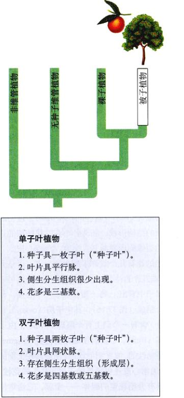
图 37.15 双子叶植物与单子叶植物的区别 (此为表格文本内容的标题)
2) 花的结构
花是长有变态叶的变态茎。无论大小形状如何，它们都有一些共同的特征（图 37.16）。每朵花都起源于花柄 (pedicel) 顶端的花原基 (primordium)，再由花原基发育成花芽。花柄的顶端膨大成为花托 (receptacle)，花的其他部分着生于花托上。花的其他部分通常呈轮状着生。最外面的一轮由萼片 (sepal) 组成。在大多数花中，萼片是 3~5 片，绿色，有些像叶状，它们保护未成熟的花。在有些种类中，萼片在花开后脱落。第二轮由花瓣 (petal) 组成，通常是有颜色的，用来吸引传粉者，如昆虫和鸟。花瓣通常有 3~5 瓣，离生或者合生，而在风媒花 (wind-pollinated flower) 中则没有花瓣。
第三轮由雄蕊 (stamen) 组成，总称为雄蕊群 (androecium)，该名称源自希腊词 andros（雄性的）和 oikos（房子）。每个雄蕊都由产生花粉的花药和花丝组成，有的花中没有花丝。雌蕊群 (gynoecium) 由一个或多个心皮 (carpel) 组成，位于花的中央。术语雌蕊 (gynoecium) 来自于希腊词 gynos（雌性的）和 oikos。最初的心皮由一个叶状的结构形成，胚珠分布在叶状结构的边缘。然后叶片的边缘向内卷曲并且愈合，形成心皮。
Page 18 / 原始页码 724
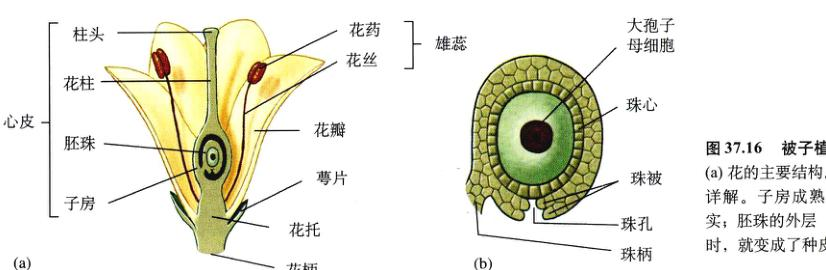
图 37.16 被子植物花的图解 (a) 花的主要结构。(b) 胚珠的详解。子房成熟后会变为果实；胚珠的外层（珠被）成熟时，就变成了种子。
原始的花有几个或许多数的心皮，但是大多数花则有 2 个或几个合生的心皮。这种合生的心皮可以从切成两半的橘子中看出：每一瓣代表一个心皮。每个心皮由三部分组成（图 37.16），其中子房 (ovary) 是基部膨大的部分，含有一个到上百个胚珠 (ovule)，由子房可发育成果实 (fruit)。心皮的顶端称为柱头 (stigma)，大多数柱头是黏性的，或者羽毛状的，使得落在上面的花粉能够附着。通常心皮连接子房和柱头的是柱状的花柱 (style)。很多花具有分泌花蜜的腺体——蜜腺，它通常位于子房的基部。花蜜是含有糖、氨基酸和其他分子的液体，用来吸引昆虫、鸟和其他动物。
3) 被子植物的生活史
花芽发育时，胚珠里的一个大孢子母细胞通过减数分裂生成 4 个大孢子（图 37.17）。在大多数显花植物中，3 个大孢子很快消失，剩下的一个大孢子的核进行有丝分裂，细胞逐渐膨胀直到增加。膨大的大孢子（此时即胚囊）再分裂两次，生成 8 个单倍体的核，分成两组，每组 4 个。同时，胚珠的两层珠被 (integument) 分化发育成为种子的种皮。珠被还在一端留下一个空隙——珠孔 (micropyle)（图 37.16）。每组 4 个核中的 1 个移向中央作为极核 (polar nuclei)。极核可以融合，形成一个二倍体的核，或者形成一个具有 2 个单倍体核的细胞。细胞壁也围绕着其余的核形成。在离珠孔最近的一组细胞中，1 个细胞成为卵，其他 2 个核叫做助细胞 (synergid)。在另一端，3 个细胞为反足细胞 (antipodal)，它们没有明显的功能，最后解体消失。这个含有 8 个核 7 个细胞的囊叫做胚囊 (embryo sac)，即构成雌配子体。虽然它完全依赖孢子体营养，但它是一个多细胞的单倍体个体。
雌配子体发育的时候，一个相似的但没有那么复杂的过程在花药中发生。大多数花药含有一些组织块（通常是 4 个），它们最终发育成与营养细胞并排排列的小室。每块组织是由很多二倍体的小孢子母细胞组成的，小孢子母细胞或多或少会同时进行减数分裂，每个小孢子母细胞生成 4 个小孢子。4 个小孢子开始是连在一起的，称为四分体 (quartet)。在大多数种类中，四分体中的小孢子很快就分开了。每个小孢子的核分裂一次，同时，围绕着小孢子形成了两层壁。伴随着花药的成熟，相邻小室间壁降解，形成两个大囊。这时，双核的小孢子形成花粉粒 (pollen grain)。花粉粒外壳经常有美丽的雕纹，它含有可以与柱头上化学物质反应的化学物质，这样可以表明雄配子体是否发育成熟。花粉粒有称为萌发孔 (aperture) 的区域，以后花粉管可以从此处伸出。
传粉只是花粉从它的来源地（花药）到接受地（显花植物的柱头）的机械传送过程。大多数传粉发生在于同植株的花之间，并且由昆虫、风、水、重力、蝙蝠和其他动物完成。然而多达 1/4 的被子植物，其花粉粒直接落在花自身的柱头上，这便是自花传粉。传粉后可能发生受精作用，也可能不发生，取决于花粉粒及其所落的花的柱头之间的遗传相容性（在有些种类中，复杂的遗传机制阻止自身受精来提高后代的多样性）。如果柱头可以接受受花粉，花粉粒致密的细胞质将从柱头中吸收物质并且从萌发孔处凸出，并发育成花粉管。花粉管能感受化学和机械的刺激，受此引导到达胚囊。它顺着化学物质的扩散梯度向下生长穿过花柱进入珠孔。花粉管通常需要几个小时到 2 天的时间就能到达珠孔，但是某些情况下，可能需要一年的时间。二细胞花粉粒中的生殖细胞落在后面，其核在花粉粒或花粉管中分裂，生成两个精子细胞。与藓类、蕨类和其他一些裸子植物的精子不同，显花植物的精子没有鞭毛。这时，有着花粉管和精子的花粉粒就是成熟的雄配子体。
Page 19 / 原始页码 725
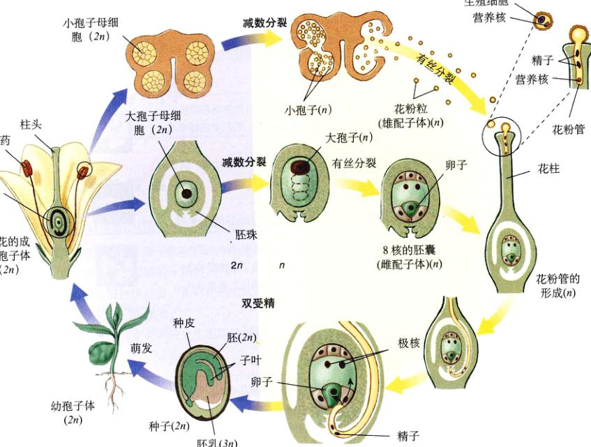
图 37.17 被子植物的典型生活史 和松树一样，受精过程不再需要水份。大多数被子植物通过动物将花粉运到心皮。心皮的外壁形成果实诱使动物散布种子。
在花粉管进入胚囊的过程中，它破坏了助细胞，然后释放出它的内含物。两个精子都有功能，发生了被子植物所独有的双受精 (double fertilization) 作用。一个精子与卵子融合形成受精卵，再由受精卵发育成孢子体雏形。另一个精子和两个极核结合生成一个三倍体的原胚乳核。原胚乳核迅速地反复分裂，很快就形成了含有成千上万细胞的三倍体胚乳 (endosperm) 组织。胚乳组织是禾本科植物种子（如玉米种子）的一个重要组成部分（图 40.7）。
在大多数显花植物中，胚乳为受精卵发育成长提供营养，也有很多物种，如豌豆和蚕豆，其胚乳在种子成熟的时候完全消失。双受精之后，珠被变硬，然后形成种子的种皮。胚囊中的单倍体细胞（反足细胞、助细胞、管核）解体。有证据表明，在裸子植物中有一种类型的双受精与被子植物紧密相关。对此问题和 Amborella（一种最原始的现存被子植物）受精作用的进一步研究，可能为双受精作用的进化提供线索。
Page 20 / 原始页码 726
小 结
37.1 植物的生活史中有多细胞的单倍体和二倍体阶段
- 植物从 4.7 亿年前的多细胞淡水绿藻进化而来。输导组织、表皮、气孔和种子的出现使它们的生殖过程对外部水分的依赖大大减少了。
- 所有植物都有一个单、双倍体的生活史，单倍体的配子体世代与二倍体的孢子体世代交替。
37.2 非维管植物特化程度相对较低，但是可以成功地在很多陆地环境下生存
- 缺少完善的维管组织的 3 个门的植物，结构最简单的，被归类为苔藓植物。这种分类并不反映共同的祖先和亲缘关系。
- 藓类、苔类和角苔类的孢子体通常依靠配子体营养，配子体较发达并且能够进行光合作用。
37.3 无种子的维管植物的孢子体具有完善的输导组织
- 植物界 12 个门中的 9 个门含有两种输导组织：木质部是特化的输导水分和溶解的矿物质的组织；韧皮部是特化的运输光合作用生成的糖类和激素的组织。
- 在蕨类和其他无种子的维管植物中，孢子体世代占优势。蕨类的孢子体有维管组织，并且有分化良好的根茎叶器官。
37.4 种子保护并且帮助植物胚的传播
- 种子是进化上一个重要的进步，为发育提供了一个休眠阶段。
- 在裸子植物中，胚珠在传粉时是裸露的；在被子植物中，胚珠被子房包被，花粉管从柱头生长进入胚珠。
- 裸子植物的花粉通常经风传播。在大多数被子植物中，花粉由昆虫和其他动物传播。花和果实都是在被子植物中出现，这是显花植物在陆生环境中占优势的原因。
问 题
- 陆生植物最近的祖先生活在哪里？它们是什么样子？它们登陆需要有什么适应性？
- 植物的世代交替意味着什么？请区分孢子体和配子体。
- 区别雌配子体和雄配子体。是什么样的单倍体孢子生成了雌雄配子体？
- 鲜树（如果存在的话）将面临什么生殖限制？
- 无种子植物的配子体与种子植物的配子体有哪些不同？
- 蕨类植物的哪个世代是可以独立营养的？
- 什么是种子？为什么种子对于陆地生活的一项重要适应？
- 裸子植物和被子植物的主要区别是什么？
- 如果一种植物所有的后代只能在一个区域中生存，它们将面临资源紧张。比较藓、松树和被子植物的散布策略。
媒体资源
- 植物介绍
- 植物特征
- 植物的生活史
- 学生研究：新罕布什尔州植物的多样性
- 非维管植物
- 小测验：藓的生活史
- 无种子的维管植物
- 小测验：蕨的生活史
- 裸子植物
- 被子植物
- 小测验：植物的生活史、植物的花、被子植物的生活史